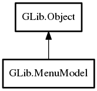

MenuModel
Object Hierarchy:
Description:
MenuModel represents the contents of a menu -- an ordered list of menu items.
The items are associated with actions, which can be activated through them. Items can be grouped in sections, and may have submenus associated with them. Both items and sections usually have some representation data, such as labels or icons. The type of the associated action (ie whether it is stateful, and what kind of state it has) can influence the representation of the item.
The conceptual model of menus in MenuModel is hierarchical: sections and submenus are again represented by MenuModels. Menus themselves do not define their own roles. Rather, the role of a particular MenuModel is defined by the item that references it (or, in the case of the 'root' menu, is defined by the context in which it is used).
As an example, consider the visible portions of this menu:
An example menu # {menu-example}

There are 8 "menus" visible in the screenshot: one menubar, two submenus and 5 sections:
- the toplevel menubar (containing 4 items)
- the View submenu (containing 3 sections)
- the first section of the View submenu (containing 2 items)
- the second section of the View submenu (containing 1 item)
- the final section of the View submenu (containing 1 item)
- the Highlight Mode submenu (containing 2 sections)
- the Sources section (containing 2 items)
- the Markup section (containing 2 items)
The example illustrates the conceptual connection between these 8 menus. Each large block in the figure represents a menu and the smaller blocks within the large block represent items in that menu. Some items contain references to other menus.
A menu example # {menu-model}

Notice that the separators visible in the example appear nowhere in the menu model. This is because separators are not explicitly represented in the menu model. Instead, a separator is inserted between any two non-empty sections of a menu. Section items can have labels just like any other item. In that case, a display system may show a section header instead of a separator.
The motivation for this abstract model of application controls is that modern user interfaces tend to make these controls available outside the application. Examples include global menus, jumplists, dash boards, etc. To support such uses, it is necessary to 'export' information about actions and their representation in menus, which is exactly what the GActionGroup exporter and the GMenuModel exporter do for ActionGroup and MenuModel. The client-side counterparts to make use of the exported information are DBusActionGroup and DBusMenuModel.
The API of MenuModel is very generic, with iterators for the attributes and links of an item, see iterate_item_attributes and iterate_item_links. The 'standard' attributes and link types have predefined names: g_menu_attribute_label, g_menu_attribute_action, g_menu_attribute_target, g_menu_link_section and g_menu_link_submenu.
Items in a MenuModel represent active controls if they refer to an action that can get activated when
the user interacts with the menu item. The reference to the action is encoded by the string id in the
g_menu_attribute_action attribute. An action id uniquely identifies an action in an action
group. Which action group(s) provide actions depends on the context in which the menu model is used. E.g. when the model is exported as
the application menu of a GtkApplication, actions can be application-wide or window-specific (and thus come from two
different action groups). By convention, the application-wide actions have names that start with "app.", while the names of
window-specific actions start with "win.".
While a wide variety of stateful actions is possible, the following is the minimum that is expected to be supported by all users of exported menu information: - an action with no parameter type and no state - an action with no parameter type and boolean state - an action with string parameter type and string state
Stateless
A stateless action typically corresponds to an ordinary menu item.
Selecting such a menu item will activate the action (with no parameter).
Boolean State
An action with a boolean state will most typically be used with a "toggle" or "switch" menu item. The state can be set directly, but activating the action (with no parameter) results in the state being toggled.
Selecting a toggle menu item will activate the action. The menu item should be rendered as "checked" when the state is true.
String Parameter and State
Actions with string parameters and state will most typically be used to represent an enumerated choice over the items available for a group of radio menu items. Activating the action with a string parameter is equivalent to setting that parameter as the state.
Radio menu items, in addition to being associated with the action, will have a target value. Selecting that menu item will result in activation of the action with the target value as the parameter. The menu item should be rendered as "selected" when the state of the action is equal to the target value of the menu item.
All known sub-classes:

Namespace: GLib
Package: gio-2.0
Content:
Creation methods:
Methods:
Signals:
Inherited Members:
All known members inherited from class GLib.Object